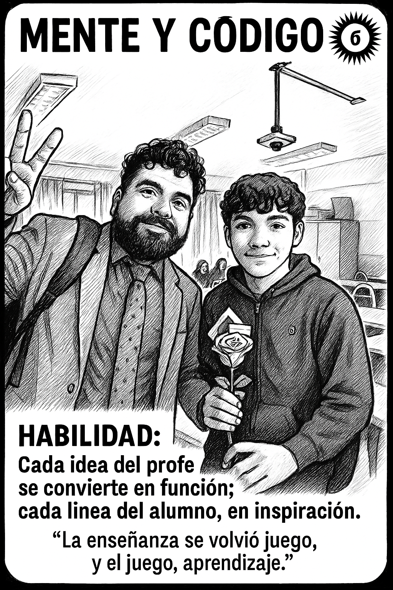
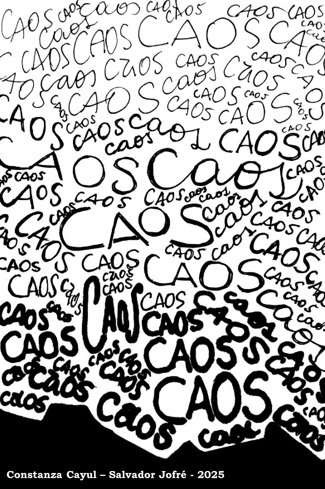

CAOS — Edición Especial
Mente y Código (2025)


✨ Toca o haz clic para ver la carta por ambos lados.
Profe Salvador:
Gracias por presentarme este proyecto y por incluirme en él. Más allá de la programación o las cartas, me enseñó lo que significa creer en una idea y llevarla a cabo con pasión. Admiro profundamente la forma en que enseña, no solo por su conocimiento, sino por los valores que transmite, su paciencia, y la manera en que logra ver el potencial en cada uno de nosotros.
Usted es una de esas personas que marcan una diferencia real — no solo en el aula, sino en la vida de quienes tenemos la suerte de aprender con usted. Gracias por confiar, por inspirar y por ser un ejemplo a seguir.
— Benjamín González 🧠💻
Gracias por presentarme este proyecto y por incluirme en él. Más allá de la programación o las cartas, me enseñó lo que significa creer en una idea y llevarla a cabo con pasión. Admiro profundamente la forma en que enseña, no solo por su conocimiento, sino por los valores que transmite, su paciencia, y la manera en que logra ver el potencial en cada uno de nosotros.
Usted es una de esas personas que marcan una diferencia real — no solo en el aula, sino en la vida de quienes tenemos la suerte de aprender con usted. Gracias por confiar, por inspirar y por ser un ejemplo a seguir.
— Benjamín González 🧠💻